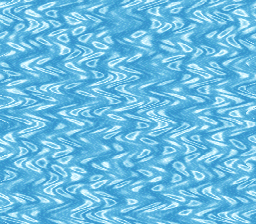

|
OpenSNES
Modern Open-Source SNES Development SDK
|
|
OpenSNES
Modern Open-Source SNES Development SDK
|
One water image, one per-scanline ripple, made two ways: first by an HDMA table written by hand and animated krom-style, then by the hdma module's wave helper. Press A to switch between them.

| Button | Action |
|---|---|
| A | Switch between the hand-built table and the hdma module |
| D-Pad Left/Right | Module mode: amplitude 2 to 24 pixels, in steps of 2 |
The ripple runs from boot, with no input.
Then open hdma_wave.sfc in luna (luna-gui hdma_wave.sfc) or any SNES emulator.
The PPU draws 224 lines per frame. HDMA feeds a PPU register a new value at the start of each line from a table: give BG1's horizontal scroll (BG1HOFS, $210D) a sine, one value per line, and each line of the image shifts by a different amount.
The table here is krom's, verbatim (res/wavetable.bin, 896 entries):
HDMA_MODE_1REG_2X writes two bytes to the same register, which is the shape the 16-bit scroll registers expect (low byte, then high byte).
Line L reads entry phase + L, so the crests flow up the screen one line per frame. The table holds 672 + 224 entries so that every start phase still has a full screen of valid lines. Nothing is ever written to it, so HDMA can never read a half-updated entry, and the per-frame cost is one hdmaSetup call. HDMA reloads its table address at the start of every frame, so repointing during VBlank is safe.
The module computes the sine table in RAM, double-buffers it and advances it each frame. Amplitude 10 at frequency 10 (a 25.6-line period) is close to krom's table (round(10 * sin), a ~25.8-line quasi-period), so the ripple barely changes when you switch. What you gain is the parameter: LEFT/RIGHT call hdmaWaveH again with a new amplitude.
The hand-built table runs on channel 0 (krom's), the module's wave on channel 6. hdmaWaveInit() switches off every HDMA channel, yours included, so it comes before arming the module's. Going back, hdmaWaveStop() releases channel 6 and restores BG1's scroll, then the hand-built table is re-armed from the phase it had reached.
Register-level — krom's writes vs what this ROM's generated code does:
| Register | krom (ASM) | this example (via the C API) |
|---|---|---|
| $4300 DMAP0 | %00000010 | hdmaSetup mode = HDMA_MODE_1REG_2X (0x02) |
| $4301 BBAD0 | $0D (BG1HOFS) | HDMA_DEST_BG1HOFS (0x0D) |
| $4302-3 A1T0 | table start, +3 bytes/frame | hdmaSetup(…, wavetable + wave_phase*3) per VBlank (hand mode) |
| $4304 A1B0 | $00 | the far pointer's bank byte (the table's ROM bank) |
| $420C HDMAEN | %1 once | hdmaEnableMask(1 << CH_HAND) at boot (and on the way back from module mode) |
| $2105 BGMODE | $0B (mode 3 + BG3-prio bit, no-op in mode 3) | setMode(BG_MODE3, 0) → mode 3 |
| $2107 BG1SC | $FC (word $FC00 → mirrors $7C00) | bgSetMapPtr(0, 0x7C00, SC_32x32) |
One deliberate difference: krom rewrites only A1T0L each frame; this example re-runs hdmaSetup (same five values) — semantically identical.
Behavioral — proven EXACT (luna v1.9.0 dma.channels[] + displacement-field analysis on luna frames sequences of both ROMs):
| Proof | Result |
|---|---|
| HDMA table | byte-identical: krom's 896 entries extracted verbatim (res/wavetable.bin) |
| This ROM's rendering | displacement field == table prediction, residual 0 over 1400 line-measurements |
| This ROM's cadence | exactly one +3-byte A1T0 step per frame, at VBlank (register-level, dma.channels[0].a_addr) |
| Reference's rendering | every frame pair fits the same table with residual 0 |
| Reference's cadence in luna | irregular 2,1,1 entries/frame — a luna $4210 polling emulation issue (luna#107), not a demo or port defect; on hardware both ROMs advance +3/frame |
console, dma, background, input, hdma (LIB_MODULES in the Makefile).
| Module | Why it's here |
|---|---|
| console | consoleInit(), WaitForVBlank(), the NMI handler |
| dma | dmaCopyVram / dmaCopyCGram for the image and its palette |
| background | bgSetGfxPtr, bgSetMapPtr |
| input | padPressed() for A and LEFT/RIGHT |
| hdma | hdmaSetup / hdmaEnableMask for the hand-built table, hdmaWaveH and friends for the module's wave |
| Register | Address | Role in this example |
|---|---|---|
| BG1HOFS | $210D | HDMA target — per-scanline horizontal scroll |
| DMAP0 / DMAP6 | $4300 / $4360 | Channel mode (HDMA_MODE_1REG_2X) |
| BBAD0 / BBAD6 | $4301 / $4361 | Target register ($0D = BG1HOFS) |
| A1T0 | $4302-$4304 | Table address, +3 bytes per frame in hand mode |
| HDMAEN | $420C | Bit 0 in hand mode, bit 6 in module mode |
| BGMODE | $2105 | Mode 3 (8bpp BG1) |
| File | What's in it |
|---|---|
| main.c | Setup, the hand-built repoint loop, the switch to the hdma module |
| data.asm | The Mode 3 image (tiles in two sections, map, palette) and krom's table |
| res/water.bmp | Original art: procedurally generated water caustics (256 colours) |
| res/wavetable.bin | krom's 896-entry HDMA table, extracted verbatim |
| Makefile | LIB_MODULES, and the gfx4snes rule for the 8bpp image |